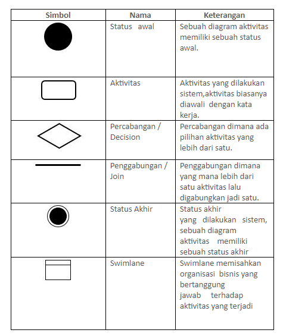

NIM: 1811500085
NAMA: Maulana Malik Fajari
KELOMPOK: TI6A
Hasil saduran pada hari (Rabu, 14 April 2021):
Apa itu Activity diagram? Activity diagram adalah Menganalisis sebuah sistem berjalan atau Proses bisnis dalam bentuk diagram.
Tujuan Activity Diagram?
-Menjelaskan urutan aktivitas dalam suatu proses.
-Di dalam dunia bisnis biasanya digunakan untuk modeling (memperlihatkan urutan proses bisnis).
-Mudah dalam memahami proses yang ada dalam sistem secara keseluruhan.
-Merupakan metode perancangan yang terstruktur, mirip dengan Flowchart maupun Data Flow Diagram (DFD).
-Mengetahui aktivitas aktor/pengguna berdasarkan use case/diagram yang dibuat sebelumnya.
Komponen Activity Diagram:

P.S Belum selesai